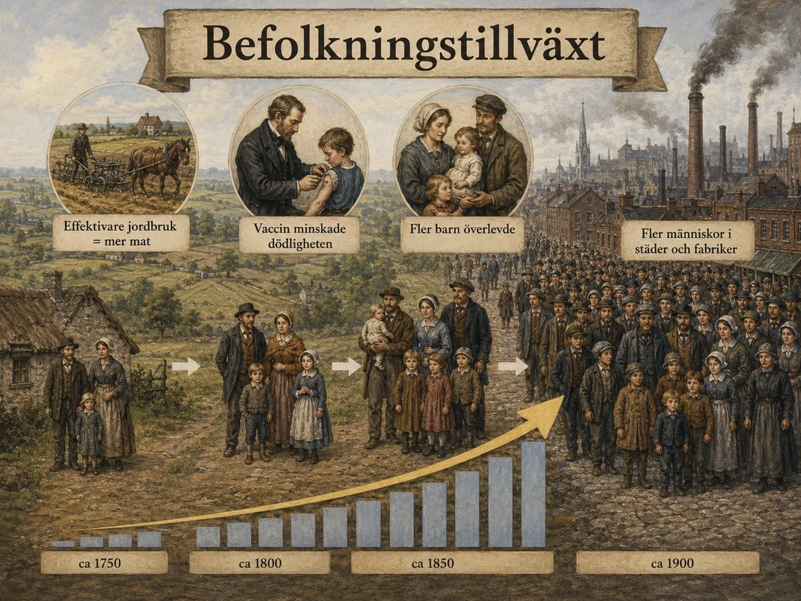
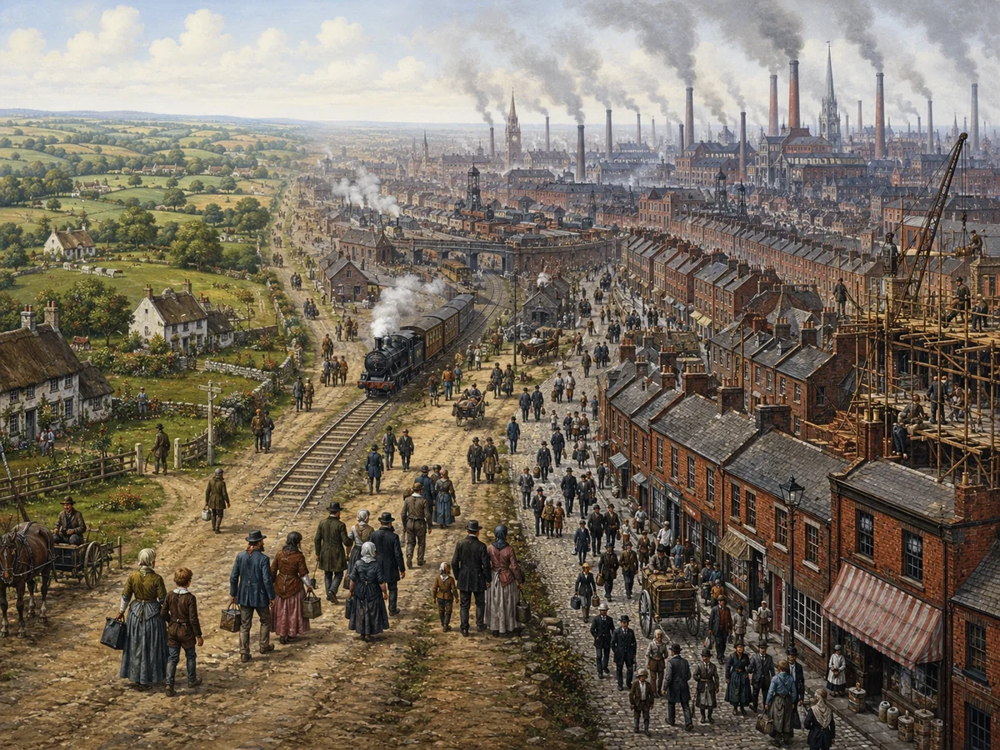
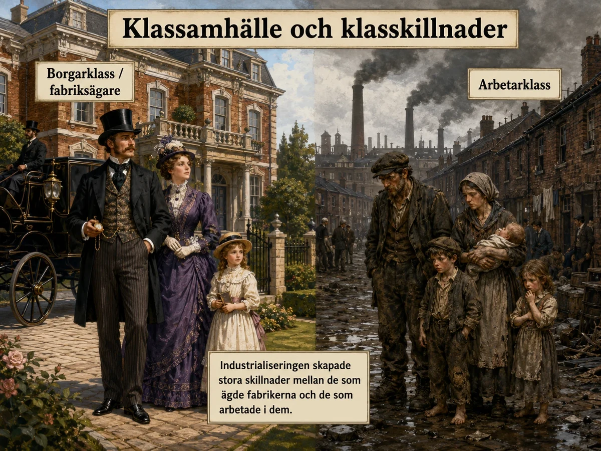
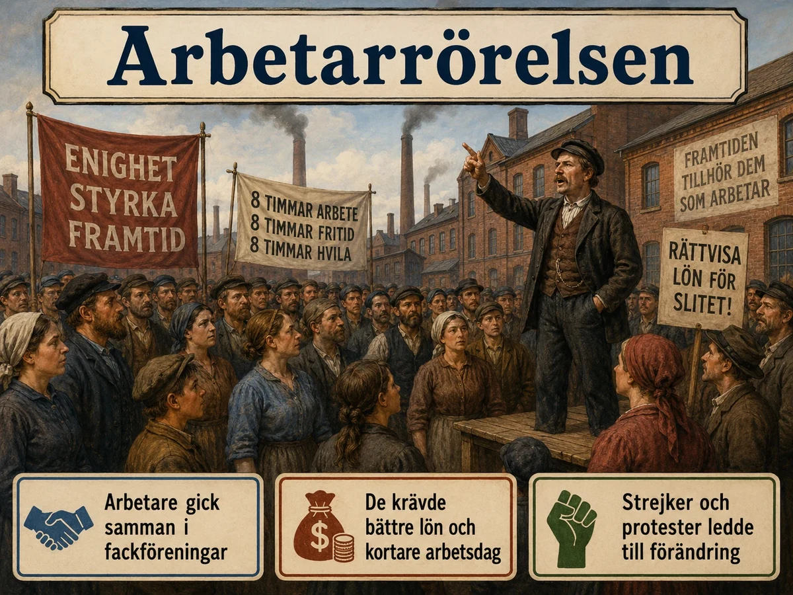
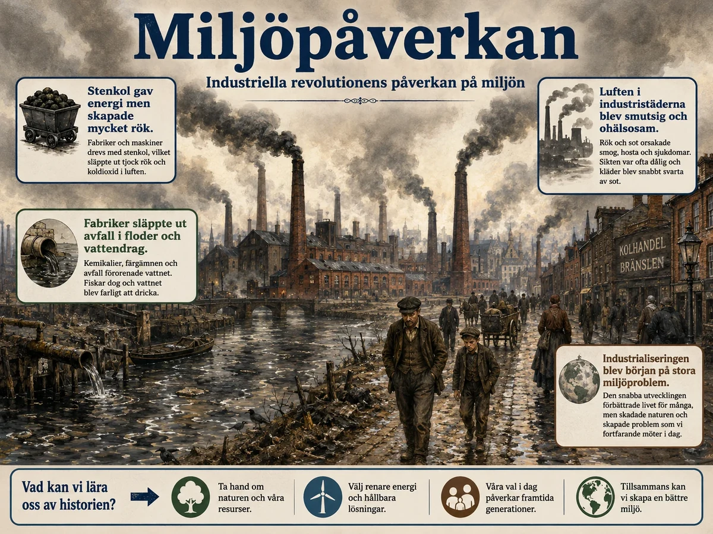

— befolkning, klass, arbetarrörelse och miljö: industrialiseringens dubbla arv —
Den industriella revolutionen förändrade människors liv mycket. Fabriker, maskiner och nya transporter gjorde att varor kunde tillverkas snabbare än tidigare. Men förändringen fick både positiva och negativa konsekvenser.
Den industriella revolutionen förändrade människors liv på många sätt. När fabriker började byggas kunde varor tillverkas snabbare och i större mängder än tidigare. Men förändringen handlade inte bara om maskiner och fabriker. Den påverkade också hur människor bodde, arbetade, reste och levde. Vissa konsekvenser var positiva, särskilt på längre sikt, men många fick leva under mycket svåra förhållanden under industrialiseringens första tid.
En viktig konsekvens var att befolkningen ökade. Jordbruket producerade mer mat. Fler barn överlevde och människor levde längre. När fler behövde arbete — och färre behövdes på landsbygden — flyttade många till städerna. Det kallas urbanisering. Städerna växte snabbt, men ofta för snabbt. Många bodde trångt, saknade rent vatten och bra avlopp. Själdomar spreds lätt.


Under 1700- och 1800-talet ökade befolkningen kraftigt i Storbritannien och i många andra delar av Europa. En viktig orsak var att jordbruket hade blivit effektivare. Bönder kunde odla mer mat än tidigare, bland annat genom bättre redskap, nya odlingsmetoder och nya grödor som potatis. När det fanns mer mat kunde fler människor överleva.
Samtidigt förbättrades sjukvården. Ett viktigt exempel är vaccin mot smittkoppor, en sjukdom som tidigare hade dödat många människor, särskilt barn. När fler barn överlevde och fick bättre tillgång till mat, växte befolkningen.
Befolkningsökningen blev både en orsak till och en konsekvens av industrialiseringen. När befolkningen ökade fanns det fler som kunde arbeta i fabrikerna. Samtidigt skapade industrialiseringen att fler varor kunde produceras och transporter förbättrades.
En av de tydligaste konsekvenserna av industriella revolutionen var att städerna växte. Före industrialiseringen bodde de flesta på landsbygden och arbetade med jordbruk. När fabrikerna byggdes behövdes många arbetare på samma plats. Därför flyttade många från landsbygden till städerna för att få arbete. Denna förändring kallas urbanisering.
Problemet var att utvecklingen gick snabbare än samhället hann planera för. Det byggdes inte tillräckligt många bra bostäder, och många områden saknade fungerande avlopp och rent vatten. Många arbetarfamiljer bodde trångt i små och dåliga bostäder, ibland flera personer i samma rum.
När människor bodde tätt och hygienen var dålig spreds sjukdomar lättare. Smutsigt dricksvatten och dåliga avlopp gjorde situationen ännu värre. Därför kunde medellivslängden i industristäderna ibland vara lägre än på landsbygden, trots att människor flyttade dit för att få arbete.
Den kanske mest grundläggande konsekvensen av allt du läst hittills var att det plötsligt blev fler människor — och att de i allt högre grad bodde i städer. Bakom dessa två enkla meningar döljer sig en av de största omvälvningarna i mänsklighetens historia, och den rymmer både ett mirakel och en mardröm.
Miraklet var själva befolkningsökningen. I tusentals år hade folkmängden hållits nere av ett obevekligt tak: så fort befolkningen växte tog maten slut, och svält och sjukdom tryckte ner den igen. Jordbruksrevolutionen, som du mötte tidigare, sprängde det taket genom att ge mer mat. Samtidigt började dödligheten sjunka av andra skäl: vaccinet mot smittkoppor, som engelsmannen Edward Jenner utvecklade 1796, betvingade en av historiens värsta dödsorsaker, och så småningom gav renare vatten och bättre kunskap färre dödsfall. När färre barn dog och människor levde längre, började befolkningen växa snabbare än någonsin. Detta är vad man kallar den demografiska transitionen, och den är förutsättningen för allt det andra: utan en växande befolkning hade det inte funnits arbetare till fabrikerna eller kunder till varorna.
Men samma människor som fabrikerna behövde måste också bo någonstans, och här börjar mardrömmen. Ångmaskinen hade befriat fabrikerna från floderna och låtit dem klumpa ihop sig i städer, och dit strömmade människorna. Städer som Manchester växte snabbare än någon stad någonsin gjort. Problemet var att ingen hade planerat för det. Bostäder slängdes upp i all hast, tätt och uselt byggda; familjer trängdes i fuktiga källare och rum utan luft och ljus. Avlopp saknades, sopor och exkrementer samlades på gatorna, och dricksvattnet förorenades av det som rann ut i floderna.
Följden blev att de nya industristäderna bokstavligen var dödsfällor. Sjukdomar spreds i den trängsel och smuts som rådde, och framför allt härjade koleran i återkommande epidemier under 1830-, 40- och 50-talen. Länge visste ingen hur den smittade. Genombrottet kom 1854, när läkaren John Snow i London lyckades spåra ett kolerautbrott till en enda förorenad vattenpump — ett detektivarbete som brukar räknas som den moderna folkhälsovetenskapens födelse. Dödligheten i städerna var så hög att de knappt kunde upprätthålla sin egen befolkning; det var den ständiga inflyttningen från landet som fick dem att växa ändå.
Här möter vi en av industrialiseringens gåtfulla motsägelser: om städerna var så dödliga, varför fortsatte människor att komma? Svaret säger något viktigt om hela epoken. De kom därför att alternativet — fattigdomen och bristen på arbete på landsbygden — ofta var ännu värre. Staden erbjuds trots allt en lön och en möjlighet. Människor valde alltså med öppna ögon en hård och farlig tillvaro framför en hopplös, och det är i den bittra avvägningen mycket av industrialiseringens mänskliga historia ryms.
Men berättelsen slutar inte i eländet, och det är viktigt att se. Just för att städerna blev så olidliga tvingades samhället till slut att agera: att bygga avlopp och vattenledningar, riva slum och stifta lagar om hälsa och bostäder. Den moderna staden — med rent vatten i kranen och avlopp under gatan — föddes ur kampen mot dessa fasor. Urbaniseringen skapade problem så stora att de till sist måste lösas, och lösningarna blev grunden för det bekväma stadsliv vi idag tar för självklart.
Hur genomgripande förskjutningen var syns i en enda siffra: vid mitten av 1800-talet, omkring 1851, bodde för första gången i något lands historia ungefär hälften av Storbritanniens befolkning i städer i stället för på landet. Ett samhälle som i tusentals år varit övervägande lantligt hade på ett par generationer blivit stadssamhälle. Och detta var bara början — samma mönster skulle upprepas i land efter land i takt med att industrialiseringen spred sig, ända fram till vår egen tid, då större delen av jordens befolkning lever i städer. Den värld av storstäder vi ser som normal är historiskt sett en mycket ung uppfinning, och dess vagga stod i industrialiseringens fabriksorter.
Den industriella revolutionen skapade ett tydligare klassamhälle. En rik medelklass växte fram — fabriksaägare, företagare och handelsmmän. Samtidigt växte arbetarklassen fram. Arbetarna ägde inte fabriker eller maskiner. De fick lön för sitt arbete, men många levde fattigt.

Den industriella revolutionen gjorde klasskillnaderna tydligare. I det gamla jordbrukssamhället hade överklassen, till exempel adel och stora markägare, haft mycket makt. I det nya industrisamhället växte också en rik medelklass fram av fabriksägare, företagare, handelsmän och investerare.
Samtidigt växte arbetarklassen fram. Arbetarna ägde oftast inte jord, fabriker eller maskiner — bara sin arbetskraft. Många levde fattigt och hade liten möjlighet att påverka sina villkor.
På så sätt växte ett tydligt klassamhälle fram. Skillnaden mellan dem som ägde fabrikerna och dem som arbetade i dem blev stor. Denna grundkonflikt mellan kapital och arbete blev en av de viktigaste politiska frågorna under 1800- och 1900-talen.
En av industrialiseringens djupaste följder syntes inte i landskapet, som fabriksskorstenarna, utan i själva samhällsordningen: den skapade ett nytt slags samhälle, byggt på klass i stället för på börd. För att förstå hur genomgripande detta var måste vi knyta an till det du läste om den franska revolutionens konsekvenser, för det är samma stora förändring som här fullbordas på det ekonomiska planet.
Det gamla samhället hade varit ett ståndssamhälle, där din plats i tillvaron bestämdes av vad du föddes till: adel, präst eller ofrälse. Franska revolutionen slog sönder den fasta ordningen och ersatte den med principen om likhet inför lagen. Men industrialiseringen visade att jämlikhet inför lagen inte betydde jämlikhet i verkligheten. I stället för de gamla stånden växte nya klasser fram, och nu var det inte börden utan ekonomin — vad du ägde och hur du tjänade ditt uppehälle — som avgjorde din ställning.
Två klasser stod i centrum, och skillnaden mellan dem gick i grunden ut på en enda sak: vem som ägde fabrikerna och maskinerna. Å ena sidan fanns den nya, självsäkra medelklassen eller borgarklassen — fabriksägare, företagare, köpmän och investerare — som ägde produktionsmedlen och skördade industrins vinster. Å andra sidan fanns arbetarklassen, som du mött på nära håll: de som inte ägde annat än sin arbetskraft och tvingades sälja den för en lön. Just denna motsättning mellan kapital och arbete blev tidens stora skiljelinje.
Men klassamhället var mer sammansatt än bara "rika mot fattiga". Framför allt växte en bred medelklass fram som var något helt nytt: inte bara de allra rikaste fabrikörerna, utan också en snabbt växande skara läkare, ingenjörer, kontorister, lärare och butiksägare. Denna medelklass utvecklade sina egna ideal — flit, sparsamhet, respektabilitet och tron att den som arbetade hårt kunde förbättra sin ställning. Det är i mångt och mycket dessa "borgerliga" värderingar som präglade 1800-talet och som lever kvar än idag.
Till dessa ideal hörde drömmen om den "självgjorda mannen" — tanken att vem som helst genom flit och sparsamhet kunde arbeta sig upp från fattigdom till framgång. Den skotske författaren Samuel Smiles gjorde 1859 succé med just en sådan bok, betecknande nog kallad Self-Help. Drömmen var mäktig och sporrade många, men verkligheten var kärvare: för de allra flesta var den sociala rörligheten liten, och man dog i regel i den klass man föddes i. En annan lätt bortglömd men enorm grupp var dessutom tjänstefolket — de hundratusentals, mest kvinnor, som arbetade som pigor och tjänare i medelklassens hem. Att kunna hålla tjänstefolk blev själva kännetecknet på att man tillhörde "de bättre", och det säger något om hur djupt klasskillnaderna satt: de fanns inte bara mellan husen, utan inne i dem.
Klyftan mellan klasserna kunde vara chockerande. I samma stad kunde fabriksägaren bo i en praktvilla med tjänstefolk medan hans arbetare trängdes i slummen bara några kvarter bort — två helt skilda världar sida vid sida. Den brittiske politikern och författaren Benjamin Disraeli fångade detta 1845 när han beskrev sitt land som bestående av "två nationer", de rika och de fattiga, mellan vilka det knappt fanns någon förbindelse eller förståelse.
Det var just denna nya, skriande orättvisa som tänkare försökte förklara — och ingen gjorde det med större genomslag än Karl Marx. När han och Friedrich Engels 1848 skrev att hela historien är en kamp mellan samhällsklasser, byggde de sin analys just på det industriella klassamhälle de såg omkring sig. Vare sig man höll med Marx eller inte, hade han satt fingret på epokens centrala spänning. Klassamhället var alltså inte bara en beskrivning av hur människor levde, utan blev själva slagfältet för 1800- och 1900-talets stora politiska strider — mellan dem som ville bevara ordningen och dem som ville förändra den. Och den kamp som växte fram ur denna orättvisa är ämnet för nästa underdel.
Efter hand började arbetarna organisera sig. De bildade fackföreningar för att kräva bättre lön, kortare arbetsdagar och säkrare miljö. Det blev början på arbetarrörelsen.

När arbetarna fick dåliga löner, långa arbetsdagar och farliga arbetsvillkor började de kräva förändring. I början hade arbetarna få rättigheter. Om en arbetare klagade kunde hen bli avskedad och snabbt ersatt.
Arbetarna började organisera sig i fackföreningar. En fackförening är en organisation där arbetare går samman för att kräva bättre villkor. När många samarbetade blev det svårare för arbetsgivarna att byta ut en person, och lättare att påverka både arbetsgivare och politiker.
På längre sikt ledde arbetarnas kamp till viktiga reformer. Barnarbete begränsades, arbetstiderna blev kortare och arbetsmiljön förbättrades. Den industriella revolutionen skapade alltså stora problem, men ledde också till att människor kämpade för rättigheter och bättre livsvillkor — kampen som lade grunden för det moderna välfärdssamhället.
Om klassamhället skapade en djup orättvisa, så var arbetarrörelsen det svar de drabbade själva gav på den — och det svaret skulle förändra världen minst lika mycket som ångmaskinen. För att förstå dess kraft måste man börja i arbetarens grundproblem: som ensam individ var han fullständigt maktlös.
Den enskilde arbetaren stod svag därför att han lätt kunde bytas ut. Klagade han på lönen eller arbetstiden fanns det alltid någon i kön utanför grinden som var beredd att ta hans plats. Mot fabriksägarens makt hade han ingenting att sätta emot — ensam. Men i den svagheten låg också nyckeln till styrkan, och den bestod i ett enda ord: enighet. Om alla arbetare i en fabrik höll ihop och samtidigt vägrade arbeta, kunde ägaren inte ersätta dem allihop. Då stod maskinerna stilla och vinsten uteblev. Tillsammans hade arbetarna plötsligt ett vapen som de saknade var och en för sig.
Detta var tanken bakom fackföreningen: en organisation där arbetare gick samman för att gemensamt kräva bättre villkor, med strejken som yttersta påtryckningsmedel. Vägen dit var hård, för länge var det olagligt för arbetare att organisera sig — makthavarna såg fackföreningar som ett hot mot ordningen och mot den fria marknaden. Rätten att alls gå samman fick därför erövras genom kamp, och de tidiga fackföreningsmännen riskerade avsked, fängelse och svartlistning.
Ett berömt exempel visar hur hårt motståndet kunde vara. År 1834 dömdes sex fattiga lantarbetare i den engelska byn Tolpuddle till deportation till Australien — inte för något brott i vanlig mening, utan i praktiken för att de bildat en fackförening och svurit en ed att hålla samman. "Tolpuddle-martyrerna", som de kom att kallas, väckte en sådan folklig vrede att de till slut benådades, och deras öde blev en samlande symbol för hela rörelsen. Arbetarna byggde också upp andra former av självhjälp vid sidan av fackföreningarna: sjukkassor som gav stöd vid sjukdom och begravning, och kooperativa butiker där medlemmarna själva ägde handeln och delade på vinsten. Det handlade om mer än löner — det var arbetarklassen som lärde sig att organisera sig, ta ansvar och lita till sin egen samlade styrka.
Men arbetarrörelsen nöjde sig inte med krav på högre löner. Snart insåg arbetarna att den verkliga makten satt i politiken — och att de var utestängda från den, eftersom rösträtten var förbehållen de egendomsägande. Därför växte rörelsen från ekonomiska krav till politiska. I Storbritannien samlades hundratusentals kring den så kallade chartismen på 1830- och 40-talen, som krävde rösträtt åt alla män. Kravet avvisades då, men det gick inte att tysta, och steg för steg under 1800-talets lopp tvingades makten att vidga rösträtten. Här knyts arbetarrörelsen ihop med demokratins hela historia: det var till stor del vanliga arbetares kamp som förvandlade Europas länder från elitstyren till demokratier.
Rörelsen fick också sin egen idévärld. Den socialism du mötte redan bland den franska revolutionens ideologier blev arbetarrörelsens intellektuella vapen — en lära som satte ord på orättvisan och pekade mot ett mer jämlikt samhälle. Inom rörelsen fanns dock en avgörande skiljelinje som skulle prägla hela 1900-talet: skulle förändringen komma genom reformer, steg för steg inom det bestående systemet, eller genom revolution, ett fullständigt omstörtande av det? Den frågan skulle dela arbetarrörelsen i två grenar och forma mycket av världspolitiken.
Det verkligt storslagna med arbetarrörelsen är hur mycket av det vi idag tar för självklart som är dess frukt. Åtta timmars arbetsdag, betald semester, rätten att strejka, allmän rösträtt, sjukförsäkring och pension — nästan ingenting av detta gavs frivilligt uppifrån. Det tillkämpades nedifrån, genom generationer av vanliga människors uthålliga organisering. När du en dag har en ledig helg eller en trygg anställning, lever du i den värld som arbetarrörelsen byggde. Ur industrialiseringens djupaste orättvisa växte alltså en av dess ädlaste följder: idén att också de svaga, om de bara håller samman, kan förändra samhället.
Industrialiseringen påverkade också miljön. Fabriker, tåg och ångbåtar använde mycket stenkol. Luften blev smutsig av rök och sot. Floder förorenades. Men transporterna förbättrades också — järnvägar och ångbåtar gjorde att varor kunde följas snabbare till fler platser.
På kort sikt var industrialiseringen svår för många arbetare. På lång sikt ledde den ändå till högre levnadsstandard — varor blev billigare, sjukvården utvecklades och nya lagar gav bättre villkor.

Industrialiseringen påverkade också miljön. Fabriker, ångmaskiner, järnvägar och ångbåtar drevs av stenkol. När man eldade stenkol bildades rök, sot och föroreningar. I många industristäder blev luften smutsig och tung att andas.
Floder och vattendrag blev också förorenade när fabriker släppte ut avfall. I de snabbt växande städerna fanns dessutom ofta dåliga avlopp, vilket gjorde att smuts och sjukdomar spreds. Landskapet förändrades när våtmarker dikades ut och mark togs i anspråk för vägar, järnvägar och bebyggelse.
Industrialiseringen blev därför början på det moderna samhällets miljöproblem. Fossila bränslen som kol, olja och gas har gett enorma energimängder — men också lett till klimatförändringar och miljöförstöring som vi fortfarande lever med. Det är en av historiens tydligaste exempel på hur ett mänskligt beslut kan ha konsekvenser i hundratals år.
Den industriella revolutionen förändrade också hur människor och varor transporterades. Kanaler, järnvägar, ångbåtar och senare telegrafen gjorde att samhället knöts ihop på ett nytt sätt. Råvaror kunde transporteras till fabrikerna snabbare och billigare. Färdiga varor skickades till marknader. Människor reste längre och snabbare.
I början var industrialiseringen mycket svår för många människor — trångboddhet, långa arbetsdagar, låga löner, barnarbete. Men på längre sikt ledde den också till förbättringar. Fabriker tillverkade varor som blev billigare. Sjukvården utvecklades. Fler fick arbete, och lagar förbättrade villkoren.
Därför är det viktigt att förstå att den industriella revolutionen hade både negativa och positiva konsekvenser. På kort sikt skapade den stora problem för många arbetare. På lång sikt förändrade den samhället i grunden och lade grunden för det moderna industrisamhället — med både dess välstånd och dess problem.
I det här sista temat om konsekvenserna möts industrialiseringens två ansikten tydligare än någonstans — dess pris och dess vinst, dess mörker och dess ljus. Å ena sidan miljön, där epoken lämnade ett arv vi ännu inte gjort upp med. Å andra sidan den långsiktiga levnadsstandarden, där samma industrialisering till slut gav människor ett bättre liv än världen någonsin skådat. Att hålla båda dessa sanningar i huvudet samtidigt är själva nyckeln till att förstå den moderna världen.
Börja med priset. Industrialiseringen byggde på att elda stenkol — i fabriker, ångmaskiner, lok och ångbåtar — och det fick omedelbara följder. Städerna höljdes i rök och sot; luften i industriorterna blev tung och sjukdomsframkallande, och Londons ökända gula dimmor kunde göra det svårt att andas. Floderna förvandlades till öppna avlopp när fabrikerna släppte ut sitt gift. Detta var den första människoskapade miljökrisen i stor skala. Men den djupaste följden var osynlig och skulle visa sig först långt senare: när mänskligheten började bränna fossila bränslen i industriell skala, började den också förändra hela jordens klimat. Den globala uppvärmning som är vår tids ödesfråga har sina rötter just här, i de rykande skorstenarna. Industrialiseringen gav oss välståndet — men skickade också en räkning som våra egna generationer nu måste betala.
Ibland blev föroreningen så outhärdlig att den tvingade fram förändring. Sommaren 1858 blev stanken från Themsen, som förvandlats till ett öppet avlopp mitt i London, så olidlig att parlamentet knappt kunde sammanträda — den "stora stanken" gick till historien och blev droppen som fick myndigheterna att bygga Londons väldiga avloppssystem. Sådana ingrepp visar att miljöproblemen inte bara var olyckor, utan följder som samhället efter hand tvingades ta ansvar för. Många forskare menar rentav att människans påverkan på hela planeten blev så genomgripande med industrialiseringen att en ny geologisk tidsålder inleddes — ibland kallad antropocen, "människans tidsålder" — där vår art själv blivit en kraft som formar jordens klimat och natur.
Och ändå — och detta är den andra sanningen — får man inte glömma vinsten, för den är lika verklig. På kort sikt var industrialiseringen för många arbetare en katastrof av slit, smuts och fattigdom; det har du sett. Men på lång sikt hände något häpnadsväckande: levnadsstandarden började stiga, och till slut steg den för nästan alla. Historiker diskuterar hett hur snabbt och för vem detta skedde — den så kallade levnadsstandardsdebatten — men den långa linjen är otvetydig. Tack vare industrialiseringen lever vi idag längre, friskare och rikare än någon förindustriell människa kunde drömma om. Massproducerade varor, som förr varit lyx, blev tillgängliga för vanligt folk. Det är industrialiseringen som gjort slut på den svält och den ständiga materiella nöd som präglat större delen av mänsklighetens historia.
Transporterna och kommunikationerna band dessutom samman världen på ett nytt sätt. Järnvägar, ångbåtar och den nya telegrafen — som för första gången lät meddelanden färdas snabbare än människor — krympte avstånden och knöt ihop marknader, länder och kontinenter. Här börjar den globalisering vi lever mitt i idag: en värld där varor, människor och information rör sig över hela jordklotet.
Så står vi vid slutet av industrialiseringens konsekvenser med en dubbel arvslott. Den gav oss det moderna samhällets alla möjligheter: välstånd, medicin, demokrati, frihet från svält. Och den gav oss dess svåraste problem: klyftor, miljöförstöring och en klimatkris. Vi är alla, på gott och ont, den industriella revolutionens barn — vi lever av dess gåvor och betalar av på dess skulder. Att förstå den är därför inte bara att förstå en svunnen tid, utan att förstå den värld du själv vaknar upp i varje morgon.
Laddar övningskort…
Laddar frågor ...